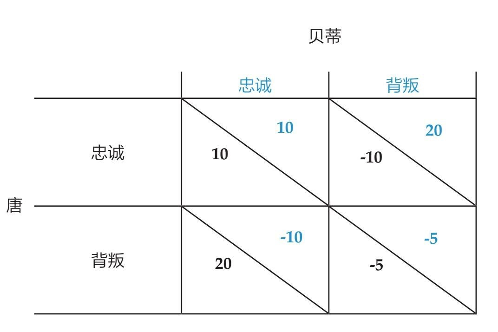

读完第四章后，让我们假设你已经是网络交友的高手了，头像出众。不过你如何将网上的成功转换成线下的辉煌呢？有没有能让我们在约会中获得理想结果的数学法则呢？答案是：当然有。
让我们暂时抛下着手研究基于相互尊重与关爱的关系的念头。因为——不难理解——有些人很清楚自己想从浪漫邂逅中得到什么，会不惜一切代价达到目的。这便是《把妹达人：那些坏小子教我的事》（The Game）和《规则》（The Rules）一类书全球畅销的诱因，它们为男男女女把对方当作战利品铺平了道路。两本书都基于同一个概念：如何充分利用刻板印象使回报最大化。
我们已经知道，博弈论中的数学运算能帮助我们战胜其他追求者。你若想把约会游戏变成约会战争，它也能为两个对手间的爱情竞争提供最佳策略。
请注意：博弈论鼓励你利用对手的弱点。当它被运用于约会场景时，这种理念带着对世道的轻微嘲讽。因此，本章前半部分会向你展示博弈论中的最佳原则，但这并不是人类道德的最佳原则。也因为它们利用了传统观念中男女之间的差异，所以并不适用于非传统或非异性恋的伴侣。如果对你不适用，请先接受我的道歉。不过我认为，读到最后你不会感觉与己无关。
我在本章末尾举了更明理、更实际的解决普遍约会难题的例子（不论你身处何种关系），这样我才能够安稳地入睡。不过首先，让我从解释男人如何利用博弈论成就他们脑海中的那一件事开始说起。
男士们：接受这个挑战意味着你要试图说服女士与你发生性关系。为了帮助你完成任务，两位数学家彼得·苏左和罗伯特·西摩提出了一个你或许愿意一试的策略。他们假设你手头有一些礼物——你可以用来讨好女士，比如钻石戒指或戏票。你的任务是选出最有可能带给你回报的礼物，而且不会引来“淘金女”。
与此同时，博弈论赠予了你一个对手：决定是否接受你礼物的女人。她的任务是试图找到最好的男人。她把性当作交易工具，礼物则是给她的回报。根据礼物的价值，她会试图判断男人的意图。如果她认为和某个男人有可能发展长久关系，或者对方充分证明了自己的财富或魅力，她便很有可能与之发生性关系。
重申一遍，我并不赞同这种世界观（尽管它或许属实），不过这些假设的确构建了一道巧妙的数学题。对于男人来说，最佳策略[1]有时充分利用了博弈论，并不适合心灵不够强大的人，然而得到的结果却充分证实了博弈论的实际效果。讨好女士又不会吸引到淘金女的最佳策略听上去颇有道理：
为了给女方留下好印象，男人应该表现得张扬、外向，要买对他来说很昂贵而对女方来说毫无用途的东西。所以男士们：若想展示财富，请呈现一场盛大的烟花表演，或是开法拉利去她家。你若想向她表现你的慷慨，用餐后请留一大笔小费。但无论如何，请不要给她买首饰或带她看她最爱的乐队表演。她需要看到盛大的排场，以证明你的认真。但是你不能给她有用的礼物，否则她有可能一直赖着你却迟迟不和你上床：典型的淘金行为。
这个理论还解释了为何对于一些公司而言，用巨大、奢华的排场来造势是值得的，例如华尔街各大银行入口的大理石或是拉斯韦加斯的豪华摩天大楼。姿态越显挥霍，顾客和竞争者便越觉得公司实力雄厚。根据这个理论，这种做法比给众多顾客买小礼物要有效得多。买小礼物的做法面临着被一些人占便宜的风险，他们拿了礼物就跑，压根儿没打算和你做生意。
作为钻石和白色条纹乐队的粉丝（我在暗示些什么），我想指出我不认为上述理论适用于男女交往。我觉得它未能捕捉到人类求爱过程核心的一些重要的方面。有时你做一件事不是为了得到什么，有时送礼物给你喜欢的人是件令人愉悦的事。你知道的，因为“快乐”“善意”，等等原因。
女孩们，我知道你们现在觉得这个为男人出谋划策的例子与你无关。不过别怕，博弈论还有很多略微屈尊俯就的运用方式能帮助你套牢你的奖励。如果男人只在乎性，那么女人总是试图诱骗男人走入婚姻。
在这个历史悠久的求爱游戏中，男人被看作猎手，女人则是猎物。然而现在我已步入了3开头的年龄，似乎美丽、聪明的单身女士数目和帅气、高质量的单身男士数目之间存在着落差。我并不是唯一注意到这个现象的人。“好男人都去哪儿了”这样的呐喊，不论在伦敦、上海还是纽约都经常听到。然而这种落差从数学角度说不通。难道数字不该是一致的吗？
在被称作黄金单身汉的悖论中，马克·吉梅恩提供了一个基于博弈论的答案，其中包括一系列的假设。
男人一生中会与各种女人交往。这些女人中一部分因外表、头脑或社会地位而被看作“实力强”的成家候选人，而另一些人则没有那么理想。男人会向其中一人求婚，这一举动是基于男人对女人的喜爱程度，也基于女人讨其欢心的努力程度。
这样说来，交往从数学角度来看与某种拍卖方式相当。在这种拍卖中，竞买人进行密封投标，无人知晓其他竞买人的出价。这个理论始于两个竞买人为同一个目标竞争。一个是强势竞买人，有很多钱。另一个是弱势竞买人，预算有限。
在单身男士的例子中，男人就是竞拍物。迷人、聪明的女人是强势竞买人，她们光彩耀人。弱势竞买人魅力值较低（衡量标准不限），光芒有限。她们在为同一个男人竞争，都不知道对方下了多大功夫。
你或许认为实力雄厚的竞买人赢得男人的机会最大，然而在现实的拍卖中，弱势竞买人往往满载而归。很多有关博弈论的文献中都提到了这种现象。
就如前面的例子一样，理论[2]有时会变得很繁杂，但一些洞察从某个角度解释了为何众多出色的30多岁的女人都在看似极小的优质单身汉圈子中竞争。
当实力稍弱的竞买人遇到喜欢的男士时，她很有可能使尽浑身解数去吸引他的注意。而另一方面，一个实力雄厚的竞买人自信地认为自己配得上任何男人，不会用尽全部力气，因为她知道转角或许还有更好的男人在等待。
男人从更有魅力的女人那里看到了漠然，便会和更关注自己、能让自己脱离单身市场的女人安定下来。
这起初并没有问题，不过当拍卖（比如说生命）不断继续，竞拍品都被实力稍弱的竞买人买走，便产生了这样的情形：剩下了为数不多的优质男人，而美丽聪明的女人还很多，她们在越来越小的池塘中钓鱼。
这就形成了黄金单身汉悖论，其中包含了清晰而略显残酷的关键信息：不论你多美艳，如果你想要找到对象，就不能太骄傲。
不过在认定我们会孤独终老并冲出去买一屋子猫之前，我们应该停下来客观地看待这些例子。尽管博弈论从数学角度来讲非常巧妙，但是它的核心处有一个错误的假设：男人都在试图骗女人上床，而女人都渴求承诺。
在现实中，这两个方面难道不是男女双方都想要的吗？我有个疯狂的猜想：甚至会有些女人渴望性，而有些男人渴望承诺。因此这种博弈论的纸牌屋便会坍塌。
所幸博弈论还有其他运用方式，并不需要男女符合刻板印象。尤其值得一提的是一个适用于大多数恋爱难题的模式。我们稍后会回到这个话题。但是首先，为了描述理论背景，让我举一个简单的例子：一对情侣正在决定是否要背叛另一半。
我们可以用一对假想情侣来举例：唐（蓝色方）和贝蒂（红色方）。唐和贝蒂都不是品行端正的人，他们不在乎背叛另一半是否“错误”。他们只是想从两性关系中获得最高分，或者说最高“回报”。这种回报由各自选择的不同策略而定，如下表所示——这在数学中叫作“支付矩阵”。

唐和贝蒂都保持忠诚对二人而言是最好的结果。在这种（被称作“帕累托最优”的）情形中，双方都会从两性关系中受益。为了阐述这个理论，让我们假设他们各自在此情形中都会得到10个回报点数。记住，唐和贝蒂都希望尽可能从两性关系中获得最高点数。
就如在现实中那样，这个游戏中总存在背叛的诱惑。如果唐决定出轨，他或许可以继续让红旗不倒，同时彩旗飘飘，这样便获得了20个回报点。而贝蒂则被唐的背叛所伤害，她的回报点数跌到了-10。
不过这种游戏设置中，贝蒂也是有同样的背叛动机。但请注意，当两个人都禁不起诱惑，选择背叛时会发生什么。两败俱伤。双方各自的回报点都跌到-5，关系崩塌，不如都保持忠诚有利。
这里的数字是杜撰的，但回报的顺序很重要。单独一方背叛会比双方都保持忠诚带来更高的分数，但对被背叛方来说则是坏消息。而如果双方都背叛彼此的话，对双方来讲都是坏消息。这种设置使忠诚游戏等同于最著名也最被广泛研究的博弈论问题：囚徒困境。
在囚徒困境中，同一个案件中的两个嫌疑人分别被审问。他们有两个选择：二人合作并保持沉默，接受同等判决；或者背叛并供出对方。一方开口而另一方沉默时，开口方会得到宽大处理。但倘若二人分别供出对方，将都要面临长期的牢狱之灾。这种回报结构与忠诚游戏是相同的：一方在另一方沉默时提供证据好过双方都保持沉默，而双方都保持沉默又好过互相背叛。最糟糕的结果是在对方供出你时，你却保持沉默。
这种情境设置的确带来了令人沮丧的看待关系的视角。合作貌似难以达成，也脆弱得难以维持。那么如果理论是正确的，人们在如此不稳定的情形中要如何拥有成功、忠诚的关系呢？
答案是：两性关系并非一招决胜负。上文支付矩阵并不适用于整体的两性关系。实际上，双方每天都在进行着这种游戏，无时无刻不面临着选择忠诚或背叛。而这种差别是关键。和同一个人重复同一个游戏，会对你看待奖励的方式产生巨大的影响。忽然间，你会试图从长远角度——而非在一件事上——得到最高分。从长远角度考虑，都保持忠诚才是对双方最有利的选择。
如果你反复出轨，对方不会再相信你。如果他认为你总是出轨，那么他能为自己做的事也只有出轨，造成两败俱伤，或者分道扬镳。
不过，如果处在相互信任合作的情形中，你们则会在这个过程的每一步得到回报。出轨这种短期回报的吸引力很小，因为从长远角度考虑你会失去太多。
这些概念最初由罗伯特·阿克塞尔罗德在1984年撰写的具有开创性的《合作的进化》（The Evolution of Cooperation）一书中阐述。阿克塞尔罗德在书中解释了人类和动物社会中产生合作关系的原因及方式，尽管唐和贝蒂的支付矩阵初看显得有些赤裸。你要是发现自己总是在和同一个人玩这种游戏，那么他还为你提供了应对策略。[3]
不过阿克塞尔罗德的策略不仅可以解释情侣间的背叛，还能为你提供一系列适用于各种恋爱难题的准则。你的约会对象答应会打电话给你却没了动静？你的男友忘了你的生日？你遇到这种情况是要保持沉默顺其自然，还是疯狂失控？阿克塞尔罗德的“以牙还牙”策略为你提供了答案。
不论这名字听上去如何，以牙还牙策略可不是在操场上的争执。这是鼓励合作、惩罚剥削的策略。数学版本涉及一开始的合作，然后复制对手的上一步。他合作，你便合作。他背叛你，你也背叛他。他改邪归正，你也改邪归正。
把这一策略运用在恋爱世界中，你要遵守的法则被分解为4个简单步骤：
1.要直截了当。在恋爱中操控性过强或爱耍手段，从长远来看都是行不通的。直截了当能给你最大的成功把握。
2.要与人为善。始于合作并保持合作，除非有不再合作的理由。
3.不要忍气吞声。不要允许自己被他人的不良行为剥削。如果有人对你不好，你要审时度势地做出相应的报复，但不要过火。一旦惩罚了对方的不良行为，你便应该参照第4个步骤。
4.懂得原谅。尽快翻过这一页，重回合作状态。为一个错误不停惩罚对方对你并不利。反应过激只会引起对方的不良回应，你们会掉入极难逆转的恶性循环。要尽快地往前看，继续以团队合作的方式相处。
综上所述：别当个惹人厌的人。
现在看来是否一切都合情合理了？唐？贝蒂？实话实说，这至少比《把妹达人：那些坏小子教我的事》一类书中毫无生气的沙文主义建议要好得多。它能为你们的关系带来真正积极的影响。
与其把你喜爱的人当作物件一样对待，不如试着遵循这些简单的数学法则，做一个灵敏的人。这也是为什么数学家是众所周知的好情人（也是好舞者）。谁能想到数学能带给你如此美好且高尚的生活方式呢？
[1] 苏左和西摩提：《昂贵但无用的礼物有助于求爱》（2005）。
[2] 居特，伊万诺娃-斯滕泽尔，沃尔夫斯特尔：《不对称拍卖中的竞标行为：一项试验性研究》（2005）。
[3] 虽然阿克塞尔罗德的以牙还牙策略并非总是最理想的，但它一次又一次地在囚徒困境策略电脑锦标赛中获得了卓越的成功。作为好用而简单的策略，它尤其适用于长远计划，因此也适用于恋爱关系。